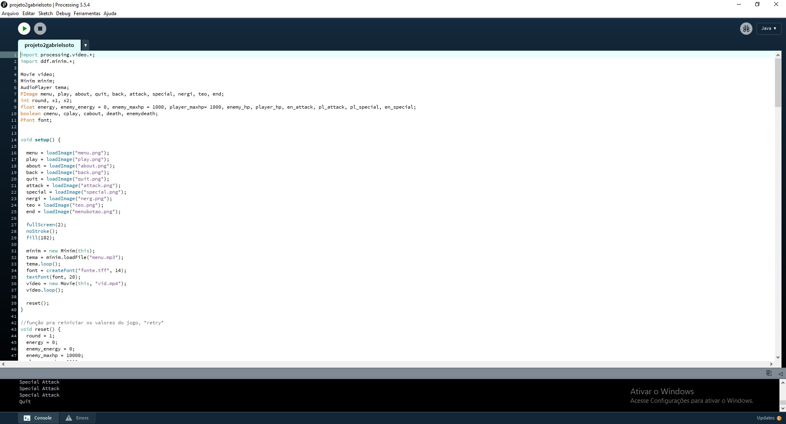

O primeiro projeto da disciplina realizado nesse período foi um jogo desenvolvido na ferramenta Construct 3, consistiu de um jogo do tipo Tower Defense.
O segundo projeto foi desenvolvido na IDE Processing, em Java, por meio dessa ferramenta foi criado um jogo de turnos inspirado em personagens da franquia Monster Hunter
No último projeto foi criado um jogo em C# com auxilio de Windows Forms através da IDE Visual Studio. O jogo é um light gun shooter inspirado em Duck Hunt
O segundo TDE da disciplina consistiu em simularmos um sistema bancário, contemplando a pagina do gerente e do cliente, cada uma com suas respectivas funções.
Último TDE da disciplina, é uma simulação de um sistema de alocação de memória através de um matriz, com alocaçôes de otimização variada.